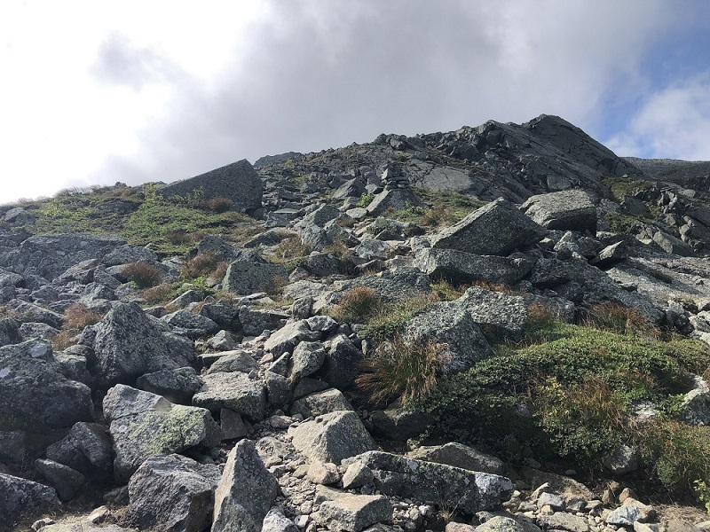
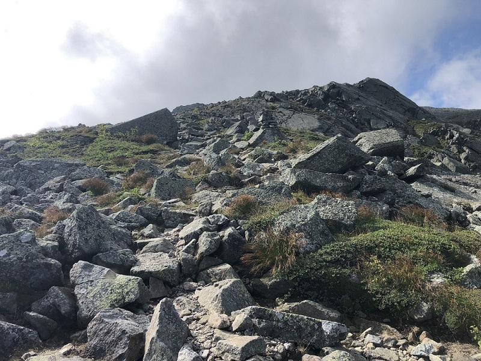

Mt. Adams Hike
On August 10, 2021, I hiked up to the summit of Mt. Adams in the White Mountain National Forest in New Hampshire. This mountain is the 2nd highest in the Presidential Range. It's summit is at 5735 feet, and is 2nd only to Mt. Washington.
I began my hike at the Appalachia trailhead on Rte 2 in Randolph, NH. I hiked up the Airline trail, all the way to the summit of Mt. Adams. This trail is approximately 4.3 miles and 4500 feet of elevation gain. It was going to be hot and humid, with possible afternood thunderstorms, so I started fairly early, around 7:30 am. It took me about 3 hours to get above the tree line, which is where the incredible views open up. The sun was shining and there were a few scattered clouds both above and below the mountains.
As I approached the last half mile to reach the summit, the clouds really started rolling in fast. It didn't take long for the summit to get socked in. The terrain gets steeper and the trail is just boulders. Challenging but fun last half mile. From the summit, you couldn't see any of the nearby mountains due to the clouds, but there was a partial view down into the Great Gulf Wilderness.
After a nice relaxing lunch, I made my way down the Star Lake trail, which leads past a small mountain lake and meets up with the Madison Springs Hut. This is an AMC hut, which caters to overnight hiking guests (with reservations). They supply dinner and breakfast to the overnight guests. They also welcome hikers to stop in along their journeys. Sorry, but no roads leads to this hut in the mountains. Foot traffic only! They offer for sale snacks, coffee, lemonade, possibly some soup, etc. I relaxed with some delicious corn bread and a cup of coffee.
I left the hut and finished my day hike by heading down the Valley Way trail. I followed this all the way to the parking lot. I did however, stop and cool off for a short time along the river/waterfalls along the lower portion of the trail. This hike was tough but well worth the effort!
I have now summited all of the mountains in the Presidentail Range portion of the White Mountains in NH!!! Mt Adams was the last one I needed to check this off my bucket list!